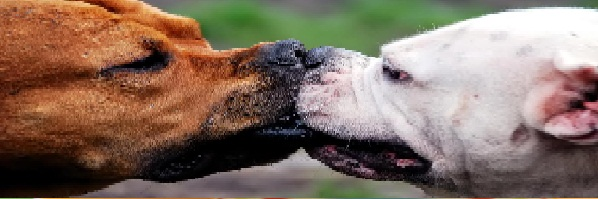
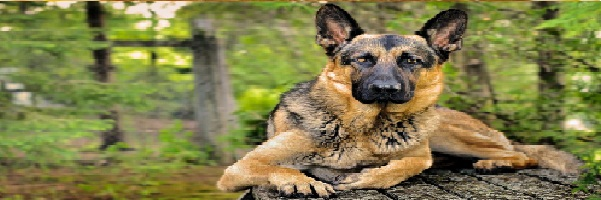

Mayo 31, 2018
Quienes Somos!!!
Milagros Caninos es un Santuario para perros localizado en la Cuidad de Villahermosa Tab.. Nos dedicamos al cuidado y rehabilitación de perros que han sido cruelmente agredidos por el ser humano, sometidos a drogas o incluso violados.
Nosotros les damos la oportunidad de que ellos sepan lo que es el AMOR
En Milagros Caninos no hay ni una sola jaula; ningún perro está amarrado o encerrado y todos viven libremente.
¿Te gustaría conocer Milagros Caninos?
Te esperamos con los brazos abiertos en una de nuestras
Visitas Guiadas.
Nuestra historia
2018- 30 de mayo
El Fundador José Antonío, realiza su primer pagina dedicado a caninos para su proteccion llamado ¨Milagros Caninos
Nuestro Staff
Profesionales del área: Contamos con un Director Médico de tiempo completo, asistentes veterinarios, auxiliares capacitados para el cuidado y atención de los perros, personal de mantenimiento, y personal de seguridad
Amigos especiales: Personas especiales que se pueden beneficiar del cariño y amor de los animales.
Voluntarios: Adicionalmente, agradecemos la participación de amantes de los perros que colaboran de manera voluntaria durante nuestras visitas guiadas, exposiciones y eventos especiales.
Acerca del fundador
José Antonío es un politico , escritor y conferencista mexicano. Soltero: Empresas dedicado al Coltan..
Desde que nació, su amor y sensibilidad por los animales ha sido muy grande; la muerte de uno de sus perros fue la inspiración para fundar Milagros Caninos. Desde su creación, ha rescatado a más de 500 perros en situaciones extremas, para darles una vida digna.
MAyo 31, 2018
Adopción en animales
La adopción de animales es el proceso de tomar la responsabilidad de un animal que un dueño previamente ha abandonado o dejado en un refugio de animales.
Existe un gran número de lugares donde se puede adoptar, tanto lugares físicos, como los refugios, como por internet: estos sitios web tienen bases de datos de mascotas y animales albergados por personas y grupos de rescate y pueden ser encontrados fácilmente.
Artículo Relacionado:
Amor en tres pasos: Adopta, Cuida, Esteriliza
Qué tener en cuenta antes de adoptar
FAQ Esterilización